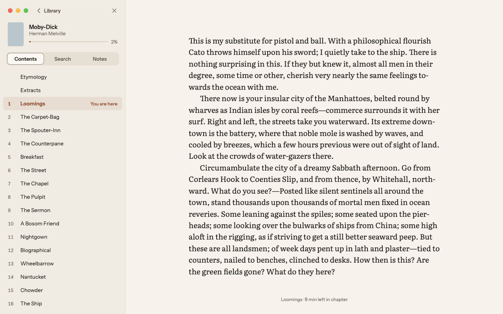
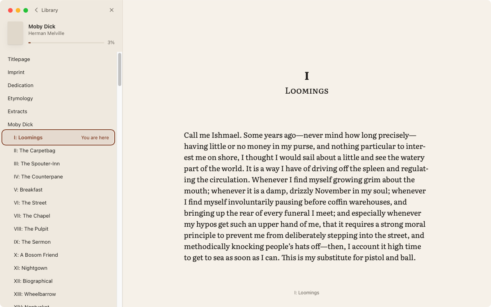
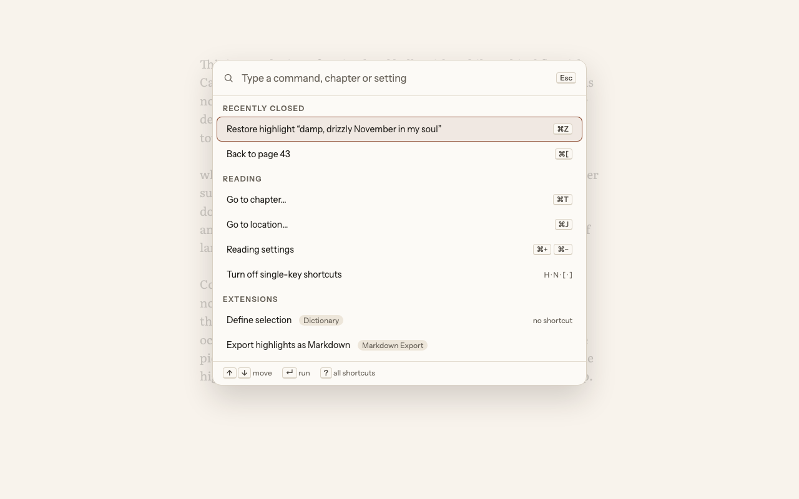
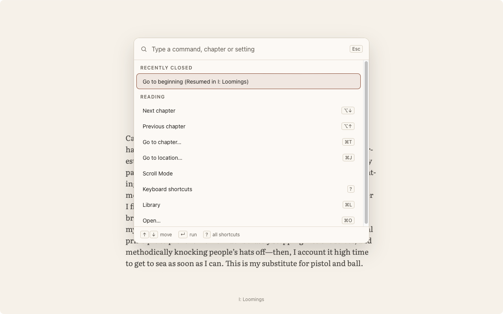
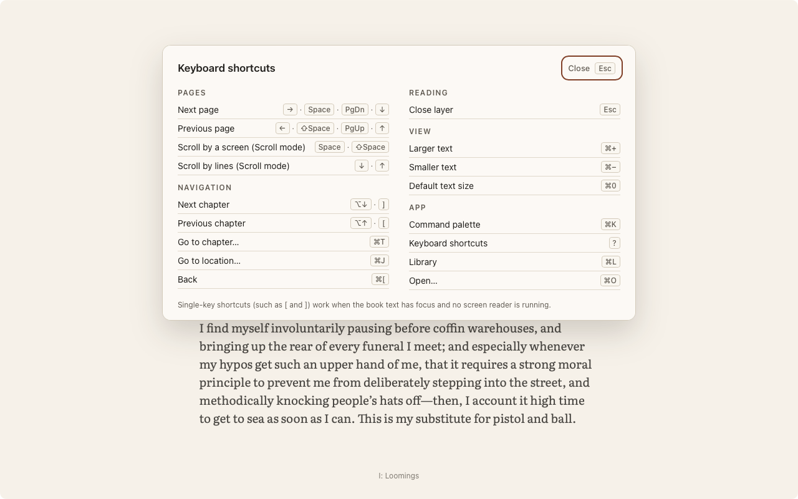
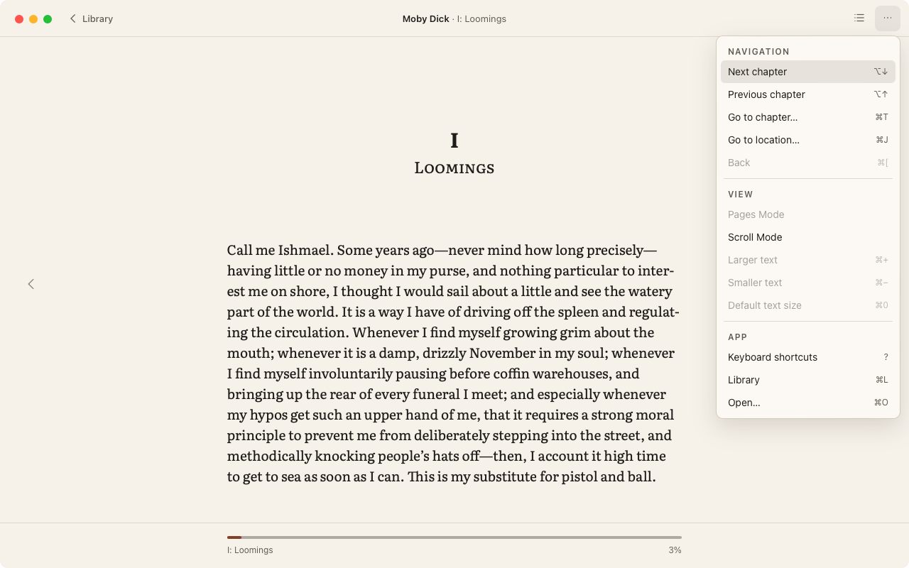
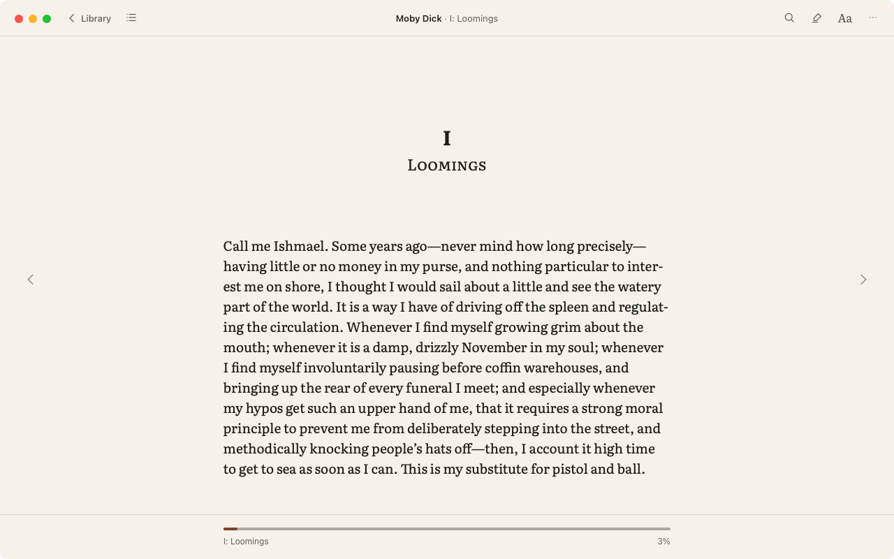

Phase 3 review: Navigator, ⌘K, Go to, footnote peek
Mocks (left) against the app in the same state, captured from the app's own window at 1280 × 800 in Paper on the reference Mac (WebKit 19618). Approving makes the app captures the Phase 3 baselines (plan §6.1). The last three sections are provisional designs with no mock: the ? cheat sheet (G10), the ⋯ menu, and the top bar's two new buttons.
| Tag | Meaning |
|---|---|
| expected | A deliberate difference: the book or an approved rule decides it |
| later phase | The feature arrives in a later phase; hidden until then |
| your call | Needs your decision |
Screen 04 — Navigator, Contents




- Matches: the 320 px panel on the panel ground with a hairline; header with the window buttons, Library and ×; cover, title, author, progress and %; rows 34 px; “You are here” in accent on a 9% accent tint; the column recentred in the remaining width (text at x = 480).
- expectedEntry labels come from the book’s own table of contents (“I: Loomings”, and the front matter Standard Ebooks lists); the mock’s number column is illustrative.
- expectedThe current row also shows the 2 px focus ring: ⌘T opens Contents focused on the current chapter (K3, C2).
- expectedStandard Ebooks’ cover is SVG, drawn small in the thumbnail.
- later phaseThe Contents · Search · Notes tabs: Search arrives in Phase 4 and Notes in Phase 5, so the tab strip appears then.
Screen 16 — Command palette




- Matches: 600 px at y = 96 on the popover surface; field with the search icon and Esc; section headings; 40 px rows with key caps; the selected row’s accent tint and ring; the ↑ ↓ ↵ ? footer.
- expectedRows are the commands that work today, with their shortcuts; Recently closed holds what was actually dismissed in this session.
- later phaseThe Extensions section (Phase 7) and settings rows such as “Reading settings” and “Turn off single-key shortcuts” (Phase 6).
- With a query, the book’s chapters join the results (“Type a command, chapter or setting”), and the section with the best match comes first.
Screen 17 — Go to location and footnote peek


- Go to: 360 px on the popover surface; Percent · Chapter segments; the field and Go; the preview line (“31% is in XXXVII: Sunset. Your current place stays in Back history (⌘[)”); the page-list note; opened from the “3% · Go to… ⌘J” label.
- expectedPrint page appears only for books with a page list (here, Moby Dick has none).
- Peek: NOTE 21 with “Esc closes · focus returns to the marker”; the note in the reading face; Open note in place and Copy; the marker keeps its ring.
- expectedThis note is long, so the peek opens above the marker (N9: above it near the page foot), never over the marker’s line.
- your callThe note is copied into the peek as plain structure (paragraphs, emphasis, super- and subscripts) rather than with the book’s own styles, because book markup is untrusted (§7). The mock says “rendered with the book’s own styles”. Keep the safe copy, or ask for a sandboxed frame that uses the book’s CSS (more work, same look for most books).
G10 — Keyboard shortcuts (?), provisional


- your callProposed design: a 760 px modal on the popover surface, 17/600 title, two columns of sections in the palette’s heading style, one row per command with its key caps, and a line about when single keys work. Built from the command registry plus the page keys, so it always lists every working shortcut (a Done-when test checks this).
⋯ menu, provisional


- your callNo design gives the ⋯ menu’s contents. Proposed: every command, grouped as in the cheat sheet, with shortcuts; unavailable ones at 40% (V4). Plan Done-when needs every command reachable from ⌘K, the menu bar and ⋯.
Screens 03 and 14 — two new top-bar buttons



- your callContents and ⋯ now appear at the right of the top bar (Screen 03 draws Contents · Search · Notes · Aa · ⋯; the other three stay hidden until their phases). 46 pixels differ from the approved baselines of Screens 03 and 14, within the 0.1% tolerance; approving records the new captures as the baselines.